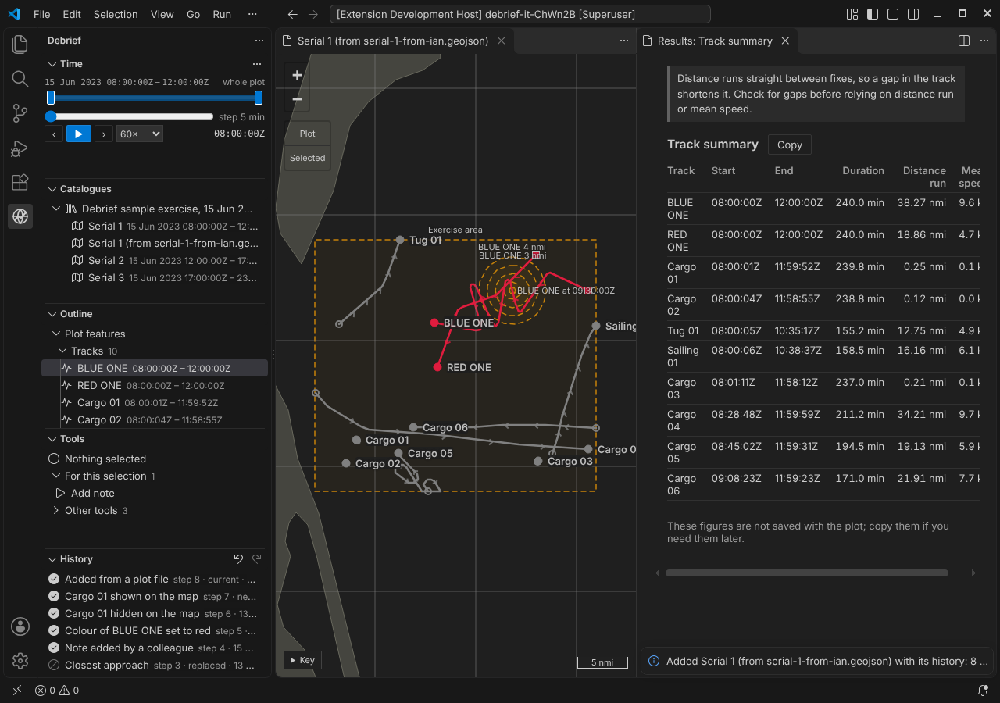
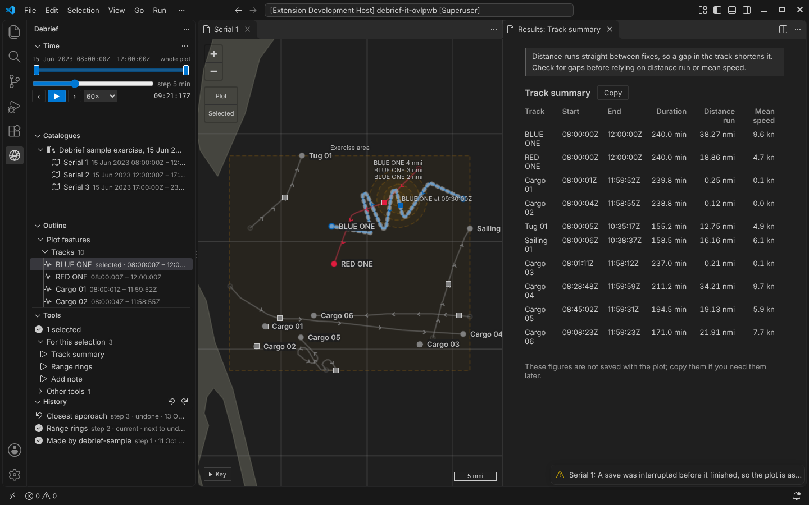

One file, history included¶
A plot is now one file an analyst can pass to a colleague, and its whole history goes with it. The colleague can undo a step the sender made, go back to any step, and see who did what, with nothing else beside the file.
The pictures come from the integration test, which drives the real VS Code with the real Python tool service on the sample exercise.
What the product owner decided¶
On 13 October the product owner settled three questions:
- A plot is one file.
plot.geojsoncarries the plot's content, its view (the island) and its full history: every step, with what made it and what it changed, its provenance, whether it is undone or replaced, and which step is current. Pass the file and you pass undo, redo, going back to a step, and provenance. - Sources are not transported. When Debrief first imports a REP or
.dpffile, the imported tracks and annotations are recorded in the plot's first step. Replay starts from that step, so it never needs the original file. A catalogue may keep its sources for audit, and the history still names each source and its checksum, but the plot file doesn't depend on them. - Keep all history, always. No limit on steps, no folding, no "flatten history" command.
Until now the history lived in a history folder beside the plot: one file per step and a file saying which step was current. That made a plot a folder, not a file.
Sending a plot to a colleague¶

The analyst sends serial 1 as a single file. The colleague uses Add a plot file… on the Catalogues view (the button with the plus on a page) and chooses it. Debrief checks the history, adds the plot to the catalogue and says how many steps came with it.
The History view lists the sender's steps exactly as they were: the import, two tool runs (the second undone, then replaced), a note added by a colleague, the colour change, the hidden track, and Show all. The newest step, Added from a plot file, records the arrival: its note names the file (serial-1-from-ian.geojson) and the catalogue, and it records who added it. No earlier step is changed.
The colleague then presses Ctrl+Z. The step recording the arrival changes nothing on the map, so an undo that took back only that would seem to do nothing. Instead, Ctrl+Z takes it back together with the change before it: the sender's Show all, so the cargo track the sender had hidden is hidden again, and the map says 1 hidden. The History view marks both as next to undo beforehand. Redo brings both back. To go further, Go back to this step on any step works as it did for the sender.
One thing doesn't come across: a step the sender had undone and not redone. It comes with the history, but the step recording the arrival is made after the plot as the sender left it, so the sender's undone step is now replaced by a later change, as it would be if the sender had made a new change. It can be read, but not redone.
If the plot is already in the catalogue (the same file added twice, or a plot sent back with changes), the new one is listed as Serial 1 (from serial-1-from-ian.geojson), so the two can be told apart. The plot's own title is unchanged.
You can try this in the playground: under Import your own, choose a Debrief plot file (.geojson). It's added in your browser and never uploaded.
Checked for changes made outside Debrief¶
A plot file is a text file, and someone might edit it. The product owner asked that the history be protected, not trusted blindly. So:
- Each step carries a checksum that covers the step and the step before it. Change a step, remove one or swap two, and the chain breaks.
- The current step records the checksum of the plot's content, so content edited without changing the history is noticed too.
- The view is outside every checksum. A new time window is never mistaken for an edit.
When something doesn't match, Debrief says so in plain words, and never carries on silently:
- "This plot's history has been changed outside Debrief: step 2 of its history is not as Debrief recorded it." The plot is shown as its file holds it, but undo, redo and changes are refused. A file like this is refused by Add a plot file… too.
- "This plot's history does not match its content: it may have been edited outside Debrief." The plot is rebuilt from its history, and the file as found is kept beside it.
The checksums catch mistakes and edits made without Debrief. They are not a signature: someone who sets out to forge a history can work out new checksums. Protecting a plot from a determined forger is a job for the folder's permissions and the network it sits on (SEC-01). What Debrief does make sure of is that a history it can't rebuild is never trusted: Add a plot file… replays the history and refuses a file whose steps don't give the plot it holds, and going back to a step replays to it and refuses if that doesn't give the plot the step recorded, so a forged history can't make Debrief write a broken plot.
Crash safety, simpler¶
Every change now rewrites the whole plot file. Debrief writes the new file in full under a temporary name, makes sure it is on the disk, and only then puts it in place of the old one. So the plot file is always the whole plot before the change or the whole plot after it.

The integration test still kills a Debrief process part-way through a save, now just before the new file replaces the old one. Opening the plot again shows it exactly as it was, and says A save was interrupted before it finished, so the plot is as it was before that change. Nothing else was lost. The machinery that finished half-written changes has gone, because there is no half-written change any more.
Plots that still have a history folder have it moved into their plot file the first time someone who can write opens them. Debrief replays the moved history, checks it gives the same plot, and only then removes the folder. Before the data format reaches 1.0 only plots of the current format open at all, so in practice this rarely runs.
What it costs¶
One file holding everything is bigger, and every change rewrites it. We measured on a synthetic plot of 40 tracks and 100,000 fixes (10.8 MB of content) with 200 steps, before and after:
| History in a folder | History in the plot file | |
|---|---|---|
| On disk | 48.2 MB, in about 200 files | 27.6 MB, one file |
| Make a change | 6.0 s | 4.4 s |
| Undo | 2.0 s | 0.7 s |
| Redo | 2.0 s | 0.7 s |
| Read the plot again | 0.5 s | 0.4 s |
| Open in a new session, with its history listed | 14 to 15 s | 14 to 16 s |
On the sample exercise's serial 1 (0.4 MB) every one of these takes a quarter of a second or less, before and after. Most of the time on the large plot went on checking the plot's content against the data format, every feature of it, for every change.
So now each feature is checked once. A feature's check depends on that feature alone, so one that has passed (in the plot as read, or in the step that added it) isn't checked again; a change checks the features it adds or changes, and the rules that span the whole plot (no two features with one id, every named set naming features the plot has) still run every time. Measured again on the same synthetic plot (18.6 MB with its history, on another machine), before and after:
| Every feature, every time | Each feature once | |
|---|---|---|
| Make a change | 4.5 s | 1.0 to 1.5 s |
| Undo or redo | 0.6 s | 0.7 s |
| Change the time window | 1.1 s | 0.6 s |
| Open in a new session, with its history listed | 9.4 s | 7.2 s |
| Add the plot file to another catalogue | 14.5 s | 8.6 s |
Opening in a new session still checks every step once, every feature in it included: a plot file read from disk, or received from someone, is never taken on trust. Undo and redo rebuild the plot by replaying its steps, whose features were all checked when the steps were read, and then check that the plot they give is the one the step recorded.
The history is written one step a line, without the indentation the content has, which keeps the file far smaller than indenting it would. Checks are only done once: steps this process has already checked are not checked again, and when another process adds a step, only that step is.
Also¶
- The STAC item is now just catalogue metadata: title, period and extent, all derived from the plot file. The plot file alone is enough to make it again, which is what Add a plot file… does.
- Changes made elsewhere are spotted by watching the plot file alone: Debrief compares the history's current step, how many steps it has, and the content checksum the current step recorded. A colleague's new time window changes none of those, so Debrief shows the new window without reading the whole plot again.
- Save as new after a conflict now copies the history up to the analyst's starting point unchanged, checksums and all.